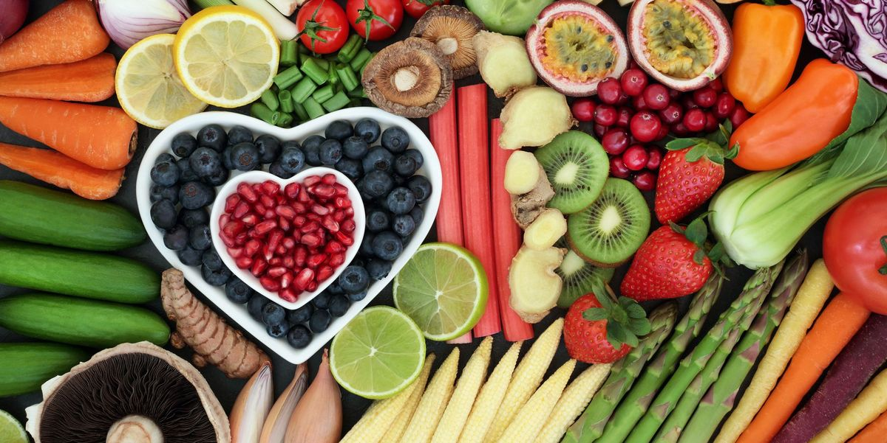

At Tropical Sun, we live by the motto: ‘Variety is the spice of life’. Our journey started in 1996 when we began importing a few specialist ingredients and daily essentials for the UK’s thriving ethnic communities. As word spread, we began receiving requests for specific items from homelands far-afield: Spices, oils, drinks and snacks that helped people stay connected to their cultures. We love that food helps to bring people together!